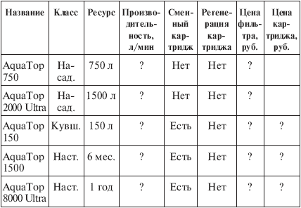
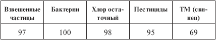

Бытовые фильтры. для очистки воды «AquaTop» .

Следуя алфавитному порядку, первыми мы рассмотрим зарубежные фильтры «AquaTop» (табл. 5.21 и 5.22) компании «Rowenta» (Германия). Фирма очень известная, выпускает различную бытовую технику высокого качества. Помните рекламный слоган: «Ровента» – радость в вашем доме»? Это про ту самую «Ровенту». Однако не перепутайте – слоган имеет отношение не к фильтрам, а к пылесосам. Пылесосы в самом деле хороши.
Что же касается фильтров, то в них фильтрация осуществляется с помощью активированного угля с порами 1 мкм или волокна с порами 0,04 мкм. Последний случай соответствует ультрафильтрации, и такие фильтры имеют дополнительное наименование «Ultra». Показатели эффективности для разных фильтров отличаются, колеблясь большей частью в диапазоне 80–95 %. В качестве примера я привожу показатели для наиболее совершенного фильтра «AquaTop 8000 Ultra». Фильтр хороший, но у многих отечественных водоочистителей показатели не хуже.
Таблица 5.21. Фильтры «AquaTop»

Примечания.
1. Ресурс кувшинного фильтра «AquaTop 150» указан как 150 л, или месяц работы. Исходя из этого можно предположить, что ресурсы «AquaTop 1500» и «AquaTop 8000 Ultra» равны соответственно 900 и 1800 л.
2. Сведений о производительности я не имею, но она, вероятно, такого же порядка, как в отечественных насадках, кувшинных и настольных фильтрах.
3. Сведений о цене у меня нет, но, вероятно, порядок такой же, как для фильтров «Instapure».
Таблица 5.22. Эффективность очистки воды фильтром «AquaTop 8000 Ultra», %

Комментарий.
На примере фильтров «AquaTop» мы разберем один интересный вопрос, касающийся индикатора ресурса, то есть автоматического устройства, которое показывает, насколько загрязнился картридж в процессе фильтрации и не пора ли его заменить. Ясно, что такой индикатор был бы очень полезен, и некоторые фильтры «Ровенты» им снабжены.
Но что это за индикатор? По какому принципу он работает?
Если индикатор ресурса на водоочистительном приборе просто отсчитывает время (обычный таймер), то это игрушка. Положим, фильтр рассчитан на 3 месяца, но мы им пользовались редко, и фильтрующий материал чист, а таймер показывает, что пора заменять картридж. Нелепо! Возможно, таймер отсчитывает не время вообще, а только время работы фильтра? Или не время, а расход, то есть литры воды, пропущенные через фильтр? Это уже лучше, но тоже не намного. Скажем, вода из крана была довольно чистая, и картридж еще вполне работоспособен, а индикатор требует, чтобы его заменили.
Однако это не худшая ситуация; худшая – это выброс задержанных фильтром примесей (грязи), когда фильтр забит после пятой или третьей части ресурса, а вы глядите на индикатор и думаете, что с вашим фильтром все в порядке. В таком случае можно надеяться лишь на то, что вода через забитый фильтр вообще не пойдет, невзирая на показания индикатора.
Я полагаю, что полезен только такой индикатор, который анализирует реальную загрязненность фильтра и информирует нас об этом. Учтите, что любые индикаторы, отсчитывающие время, расход воды, а тем более проверяющие реальную загрязненность, очень удорожают фильтр (в чем мы убедимся на примере фильтров «Brita»). Если вы приобретаете такой фильтр, проверьте по его описанию, как работает индикатор, и подумайте, стоит ли платить двойную стоимость фильтра с таймерным или расходным индикатором.